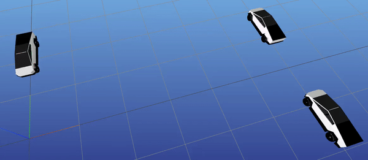
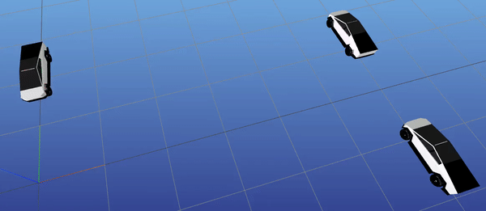

CYBERDRIFT

CYBERDRIFT

This is a motion-planning project to perform a parallel park with an autonomous vehicle. The parking spot is so narrow that it requires the vehicle to drift into the goal position. Contact-implicit trajectory optimization is used to optimize a path with initial and goal states, as well as the vehicle dynamics and contact interactions. The vehicle is modeled as a simple wheeled vehicle with particle z-dynamics and a single-patch, nonlinear friction cone that produces maximum-dissipation Coulomb friction.
An open-source, Julia implementation is available here.